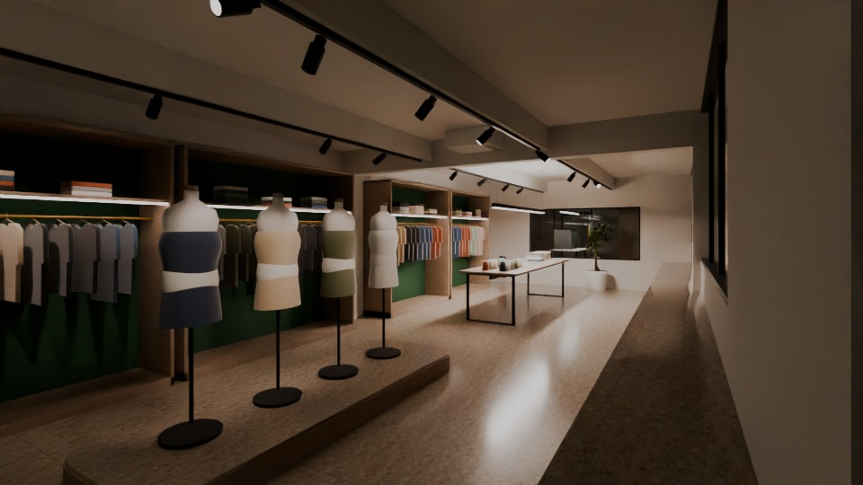

Interior design proposal | Ground floor
Premium International Fashion Corporate Headquarters & Design Development Centre
Stage II Knitting Apparel Ltd. · Stage II Knitting Apparel Unit-1 · Zara Fashion
Holding 329/2, Ward 15, Vogra, Bason, Gazipur
Experience centre - Blender Cycles render of the project model
STAGE II KNITTING APPAREL / ZARA FASHION | Ground-floor corporate office - interior design proposal01 / 18